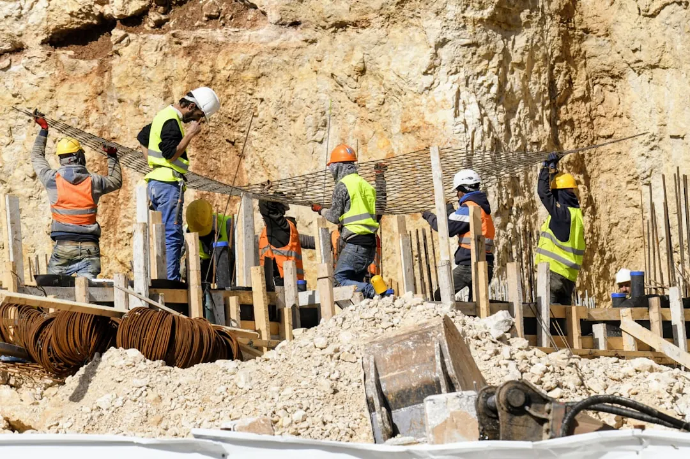

Use the published directory to compare 8 provider types, including concrete sleeper, timber, block and masonry, stone and boulder, gabion, repairs, engineered and commercial work. It shows Queensland with 4 cities and 78 listings. The enquiry process is free to submit, has no obligation to proceed, and asks for wall size, site conditions, postcode and timing before suitable professionals may contact the requester.
For Australian property owners comparing retaining wall contractors, the useful starting point is a clear brief, a likely wall category and evidence that the provider handles similar site conditions.
Retaining Wall Contractors Explained
Retaining Wall Contractors Australia presents itself as a place to find verified retaining wall contractors across Australia, with categories for new builds, repairs and several wall materials. Its published pathway is practical: browse by provider type or location, compare reviews, photos, services and pricing, then call, email or request a quote through a form.
Turn that browsing into a better scope before contacting any provider. Write down the wall size, site conditions, postcode and timing, because those are the inputs requested in the enquiry flow. Add photos, access notes, nearby structures, drainage questions and whether the work is a repair, replacement or new construction. A clearer brief makes comparisons less dependent on assumptions.
Choosing a wall category without designing the job
The listed categories are decision prompts, not a substitute for inspection. Concrete sleeper, timber, block and masonry, stone and boulder, gabion, repair, and engineered or commercial work each points to a different conversation. The owner does not need to specify the final design before asking for help, but should describe the problem the wall must solve and what is already known about the site.
- Repair enquiries: ask what information is needed before anyone recommends patching, rebuilding or replacing sections.
- Material-led enquiries: ask how the provider compares appearance, access, preparation and suitability for the materials they install.
- Engineered or commercial enquiries: ask which drawings, specifications or approvals should be reviewed before pricing is treated as firm.
- Residential build enquiries: ask what assumptions are included in the quote, especially around excavation, drainage, spoil removal and access.
For readers looking in Queensland, the related Brisbane wall contractor guide can be used as a narrower companion when checking provider fit.
Quote inputs that reduce ambiguity
A wall quote should be read as a set of assumptions, not just a final number. The published form asks for wall size, site conditions, postcode and timing, which are the minimum details needed to start a meaningful discussion. A stronger request separates what the owner knows from what must be confirmed on site.
Ask each provider to identify what is included, what is excluded and what would trigger a variation. Useful prompts include whether removal of an existing wall is included, whether drainage is included, who arranges engineering input where needed, whether access machinery is assumed, and how the site will be left at completion.
When two quotes differ sharply, compare scope line by line before assuming one option is cheaper. The difference may sit in preparation, drainage, disposal, materials, engineering review or the amount of site work allowed for.
Who this applies to
This guide applies to property owners, landlords, strata representatives, builders and small commercial site managers who need to compare wall providers before committing to a quote. It is especially useful when the project is still being scoped and the owner is not yet sure whether the job is a repair, replacement, landscaping wall or engineered structure.
It is less useful for anyone seeking a fixed technical design without a site inspection or relevant documentation. The published directory can help identify provider types, but the final decision still depends on site condition, wall dimensions, access, nearby structures and the provider's own assessment.
Signals to check before shortlisting
The directory highlights reviews, photos, services and pricing as comparison points. Treat those as prompts for verification. Look for project photos that resemble the type of wall being discussed, service descriptions that match the required material or repair, and contact options that let you confirm current coverage, availability and project requirements directly with the business.
Do not rely on a category label alone. Ask whether the provider regularly handles the chosen material, whether they inspect before finalising a scope, and how they document assumptions. If the job involves an existing damaged wall, ask what information they need to assess the cause rather than only pricing the visible damage.
A shortlisting process can stay simple: gather project details, choose the closest provider category, contact more than one suitable business, compare written scopes and keep a record of assumptions.
- Define the job. Record the wall size, site conditions, postcode, timing and whether the work is a new build, repair or replacement.
- Choose a category. Start with the closest listed provider type, such as concrete sleeper, timber, masonry, gabion, repair, or engineered and commercial work.
- Ask scope questions. Request written inclusions and exclusions for preparation, drainage, materials, access, disposal and any engineering review.
- Compare evidence. Review photos, services, pricing notes and direct answers before deciding which provider suits the project.
| Situation | Best first question | What to compare |
|---|---|---|
| New residential wall | What site details do you need before quoting? | Wall size, access, material assumptions and drainage scope |
| Existing wall repair | Do you inspect before recommending repair or replacement? | Cause assessment, included works and exclusions |
| Material preference | Do you install this wall type regularly? | Relevant photos, service fit and preparation requirements |
| Engineered or commercial job | What documents should be reviewed before pricing? | Drawings, specifications, approvals and responsibility split |
Common questions
What details should I prepare before contacting a wall provider? Prepare wall size, site conditions, postcode and timing, because those are the details requested in the published enquiry flow. Photos, access notes and a clear repair or build description make the first conversation more useful.
Is submitting an enquiry paid or binding? The published form states that submitting a request is free and has no obligation to proceed. It also states that details may be shared with suitable professionals so they can contact the requester about the job.
Which wall types are listed for comparison? The categories include concrete sleeper, timber, block and masonry, stone and boulder, gabion, repairs, engineered and commercial wall work, and the general contractor category.
Should I choose by material first or by provider first? Use the material category if the preferred wall type is already known. If the site problem is unclear, start with the general or repair category and ask what inspection is needed before a recommendation is made.
What should I check when quotes look very different? Compare the written scope before comparing only the final price. Differences can come from preparation, drainage, material assumptions, disposal, engineering input or access allowances.
This guide covers how to brief, compare and question wall providers using the published Australian directory categories and enquiry flow.